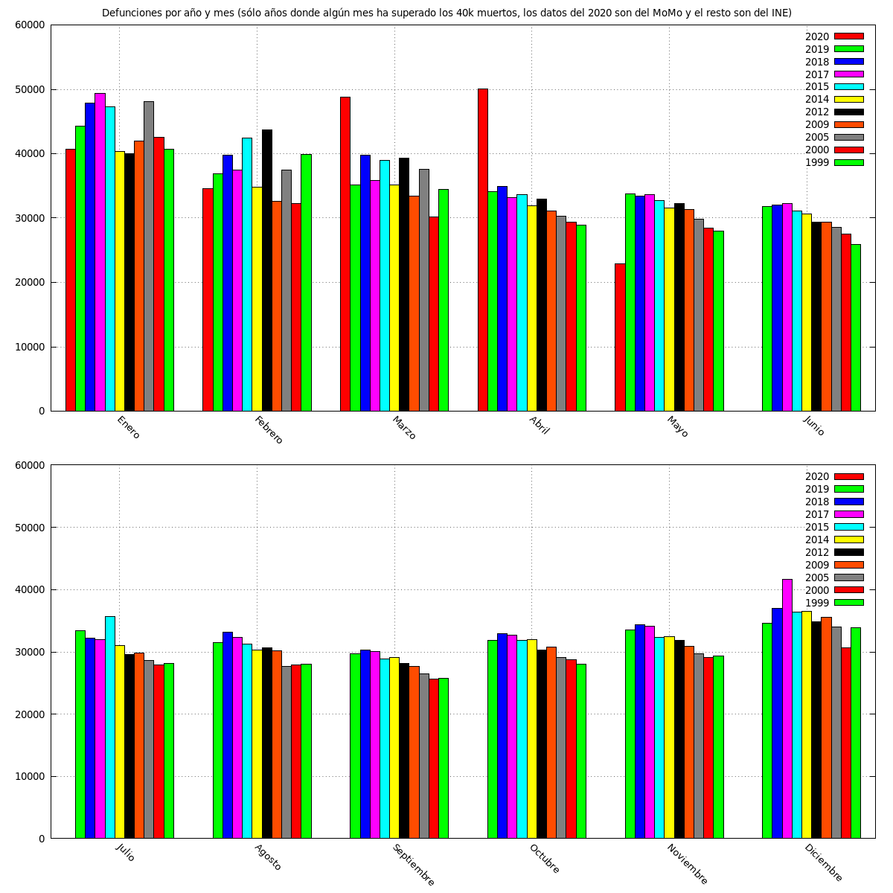
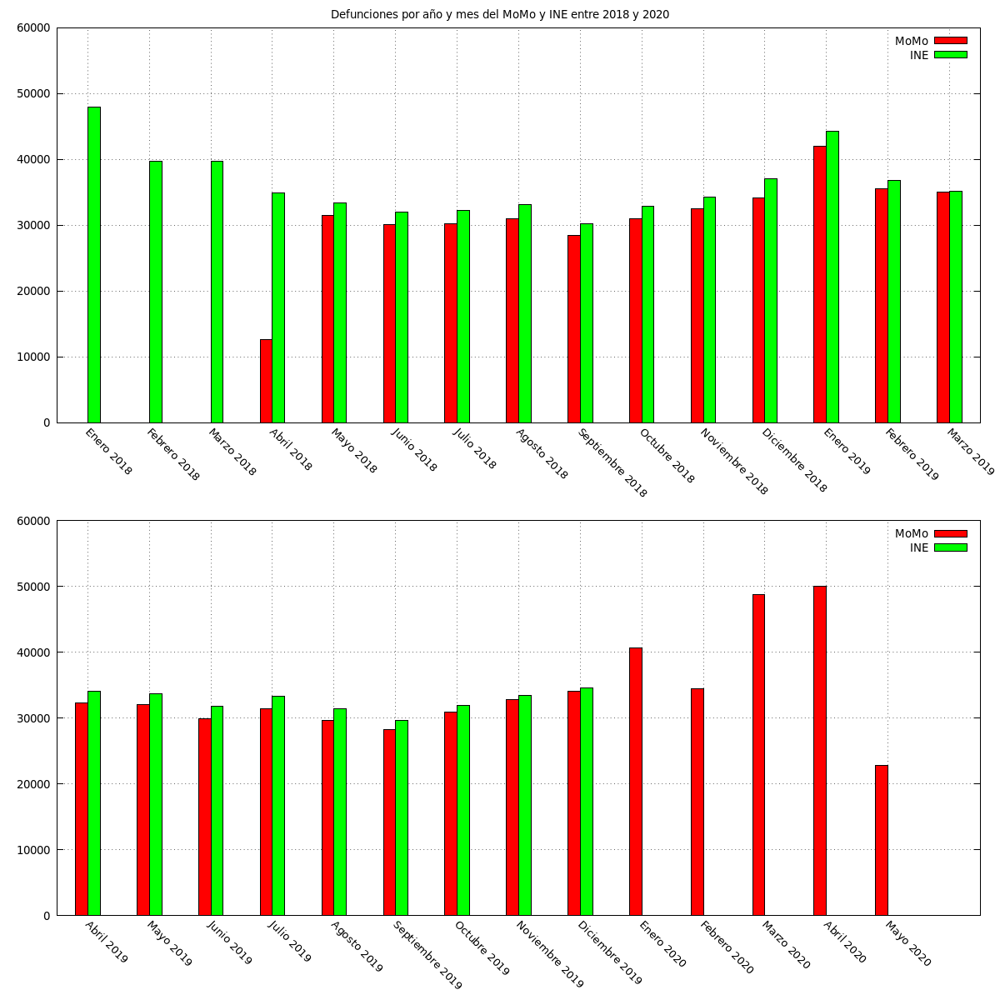
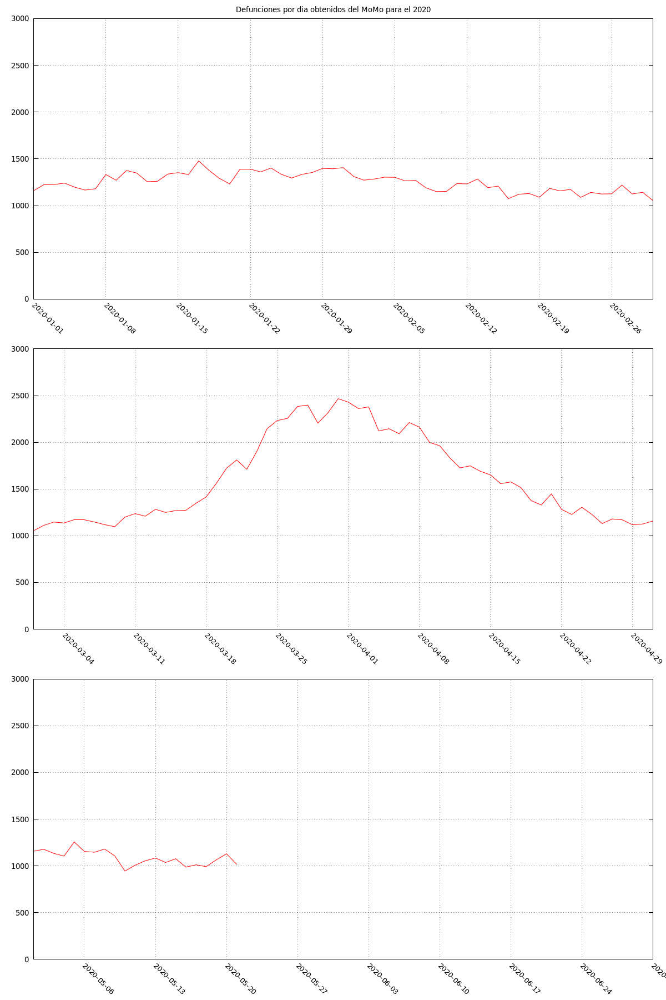
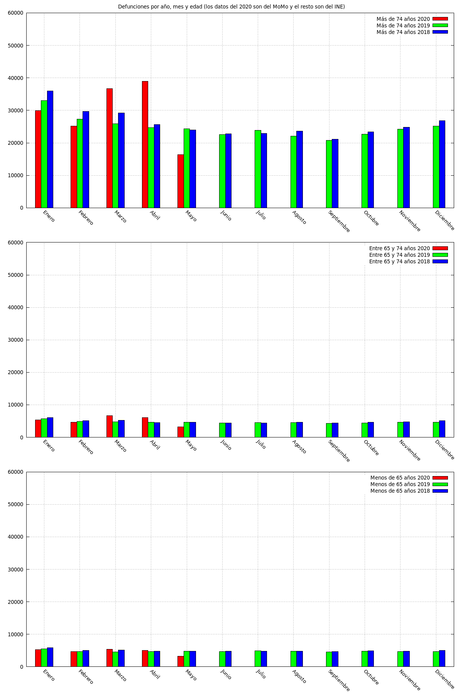
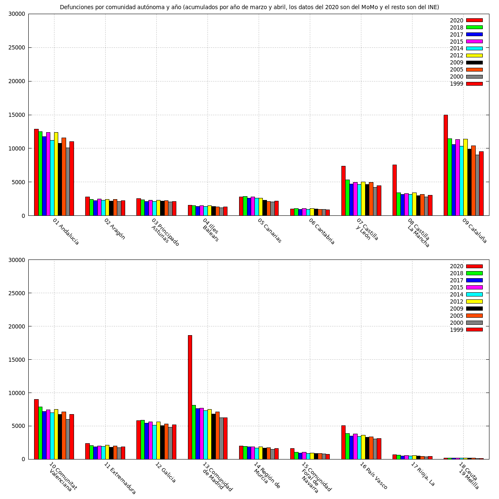
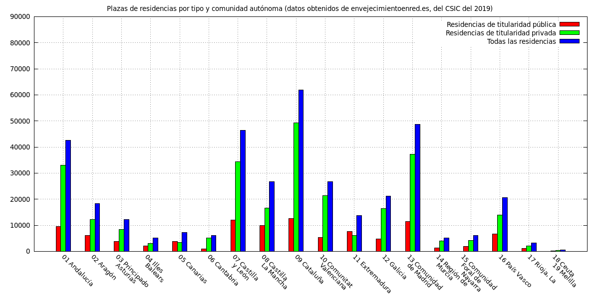
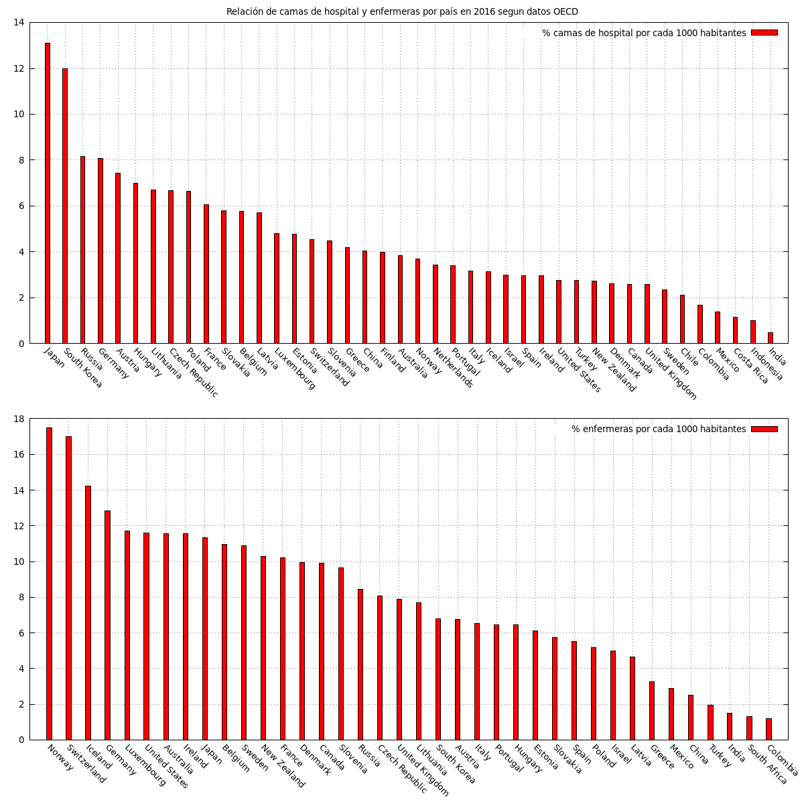

Información útil de España sobre el impacto de covid-19: gráficos de defunciones por año, origen de los datos, acumulados diarios, por edad, por comunidad autónoma y más
Defunciones por año y mes (sólo años donde algún mes ha superado los 40k muertos, los datos del 2020 son del MoMo y el resto son del INE)

Defunciones por año y mes del MoMo y INE entre 2018 y 2020

Defunciones por dia obtenidos del MoMo para el 2020

Defunciones por año, mes y edad (los datos del 2020 son del MoMo y el resto son del INE)

Defunciones por comunidad autónoma y año (acumulados por año de marzo y abril, los datos del 2020 son del MoMo y el resto son del INE)

Plazas de residencias por tipo y comunidad autónoma (datos obtenidos de envejecimientoenred.es, del CSIC del 2019)

Relación de camas de hospital y enfermeras por país en 2016 segun datos OECD
